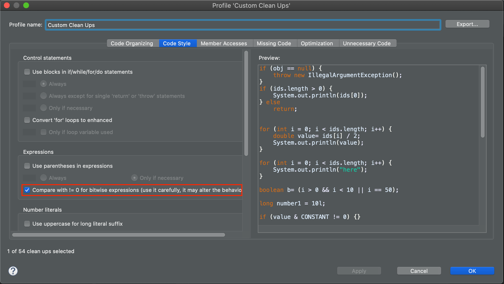
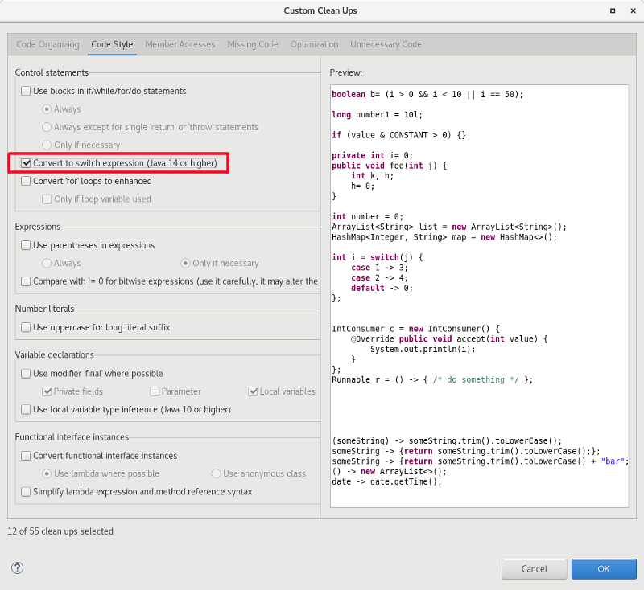
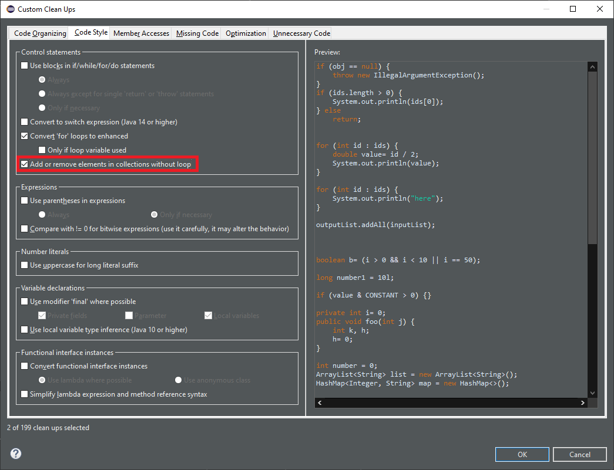
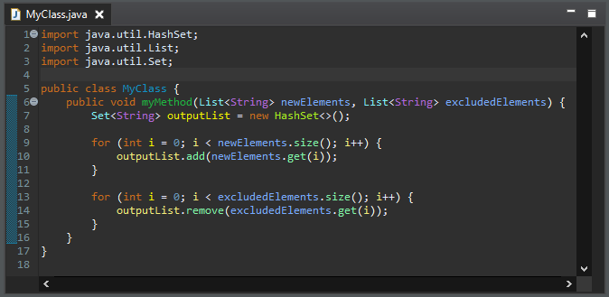
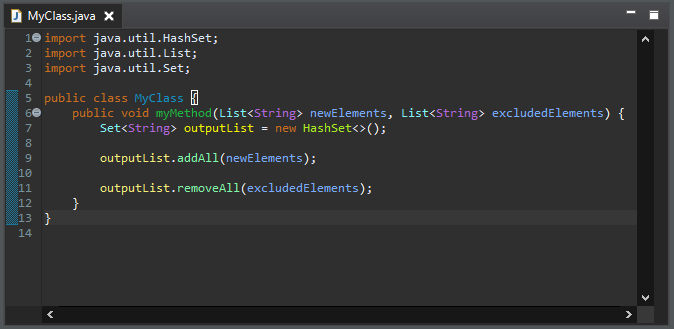
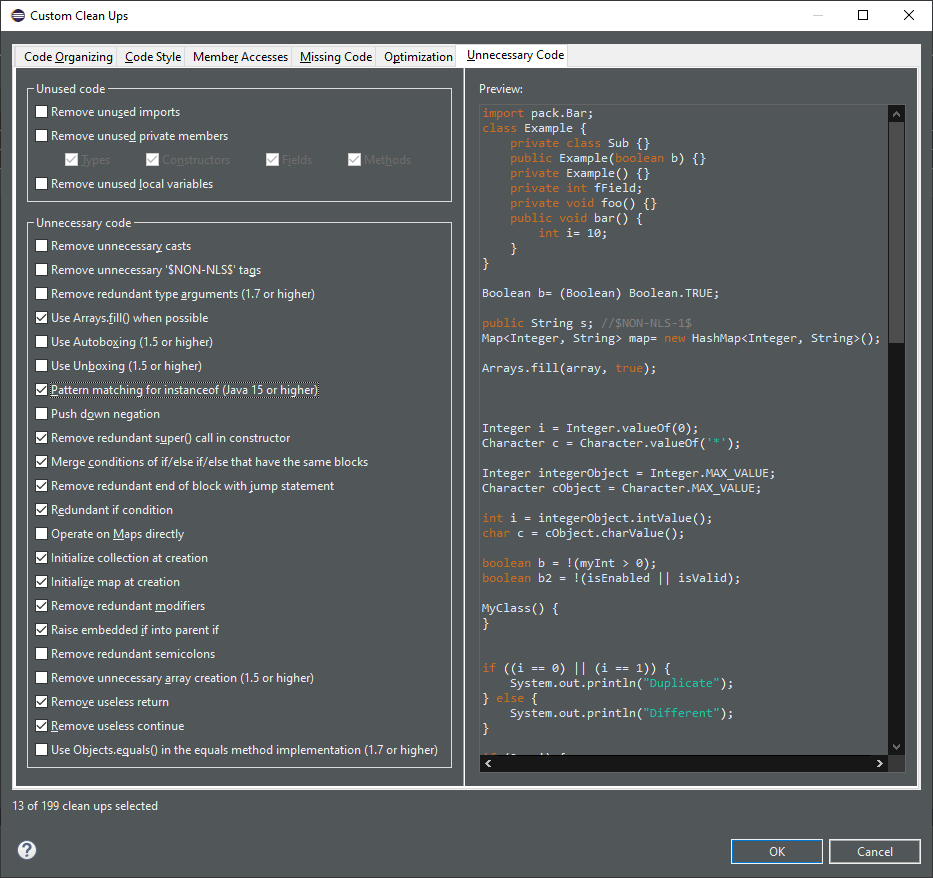
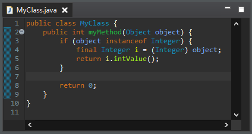

JUnit
Java Editor
You can change the default in the Java > Editor > Content Assist preference page.

> operator by != when the comparison
expression has a bitwise expression operand and a 0 operand.
This resolves an anti-pattern for such kind of comparisons, which can also be a bug when the bitwise expression is involving a negative constant value. This code smell is further described by the FindBugs project as bug description "BIT: Check for sign of bitwise operation".
To select the clean up, invoke Source > Clean Up..., use a custom profile, and on the Configure... dialog select Compare with != 0 for bitwise expression on the Code Style tab.

| For the given code: | You get this after the clean up: |
 |
 |
Switch statements that use control statements such as nested switch statements, if/else blocks, for/while loops are not considered as is the case for return/continue statements. All cases of the switch statement must either have a last assignment statement that sets the same variable/field as other cases or else has a throw statement. Fall-through is allowed between cases but only if there are no other statements between. The switch statement must have a default case unless the switch expression is an enum type and all possible enum values are represented in the cases.
To select the quick-assist, click CTRL+1 on the targeted switch statement and select Convert to switch expression if offered.
To select the clean up, invoke Source > Clean Up..., use a custom profile, and on the Configure... dialog select Convert to switch expression box on the Code Style tab.

For the given code:

One gets:

Collection.addAll(), Collection.removeAll(), Collections.addAll() or Collections.removeAll() instead of a for loop.
It refactors for loops with index, for loops with iterator and foreach loops.
It only uses Collection.removeAll() on Set because the behavior may change on list with double values.
If the source is an array, the list is raw and the JVM is Java 1.5 or higher, we use Arrays.asList() to handle the erasure type. It doesn't decrease the performance.
To select the clean up, invoke Source > Clean Up..., use a custom profile, and on the Configure... dialog select Add or remove elements in collections without loop box on the Code Style tab.

For the given code:

One gets:

instanceof operator when possible.
It is only enabled for Java 14 or higher enabling the feature preview.
The variable must be final.
To select the clean up, invoke Source > Clean Up..., use a custom profile, and on the Configure... dialog select Pattern matching for instanceof box on the Unnecessary Code tab.

For the given code:

One gets:

Arrays.fill() where possible.
The value must be hard-coded.
To select the clean up, invoke Source > Clean Up..., use a custom profile, and on the Configure... dialog select Use Arrays.fill() box on the Unnecessary Code tab.
For the given code:

One gets:

super constructor with empty arguments.
Such a call is redundant. See JLS section 12.5 for more info.
To select the clean up, invoke Source > Clean Up..., use a custom profile, and on the Configure... dialog select Remove redundant super() call in constructor box on the Unnecessary Code tab.
For the given code:

One gets:

return, break, continue or throw), but below is the same list of statements.
It detects similar statements. It also checks that the declarations of the variables in the statements are the same. It looks for redundant statements into if, else, catch and finally but not in loops.
To select the clean up, invoke Source > Clean Up..., use a custom profile, and on the Configure... dialog select Remove redundant end of block with jump statement box on the Unnecessary Code tab.
For the given code:

One gets:

The condition must be passive. The removed code should not throw an expected exception. The cleanup uses a deep condition comparison algorithm.
To select the clean up, invoke Source > Clean Up..., use a custom profile, and on the Configure... dialog select Redundant if condition box on the Unnecessary Code tab.
For the given code:

One gets:

Collection, then invoking Collection.addAll() on it, by creating the new Collection with the other Collection as parameter.
Only well known collection classes are refactored to avoid behavior changes. The cleanup is enabled only if there is no useful instantiation parameters.
To select the clean up, invoke Source > Clean Up..., use a custom profile, and on the Configure... dialog select Initialize collection at creation box on the Unnecessary Code tab.
For the given code:

One gets:

Map, then invoking Map.putAll() on it, by creating the new Map with the other Map as parameter.
Only well known map classes are refactored to avoid behavior changes. The cleanup is enabled only if there is no useful instantiation parameters.
To select the clean up, invoke Source > Clean Up..., use a custom profile, and on the Configure... dialog select Initialize map at creation box on the Unnecessary Code tab.
For the given code:

One gets:

The cleanup checks that there is no else statement.
To select the clean up, invoke Source > Clean Up..., use a custom profile, and on the Configure... dialog select Raise embedded if into parent if box on the Unnecessary Code tab.
For the given code:

One gets:

return at the end of a method or lambda.
The cleanup checks that there is no value on the return statement.
To select the clean up, invoke Source > Clean Up..., use a custom profile, and on the Configure... dialog select Remove useless return box on the Unnecessary Code tab.
For the given code:

One gets:

continue at the end of a loop.
A continue statement at the end of a loop is removed.
A continue statement at the end of a control statement is removed if the control statement is at the end of a loop.
A continue statement is kept if it has a label.
To select the clean up, invoke Source > Clean Up..., use a custom profile, and on the Configure... dialog select Remove useless continue box on the Unnecessary Code tab.
For the given code:

One gets:

Java Views and Dialogs
Java Compiler
Java Formatter
Just like with standard wrapping settings, they can be set to keep everything in a single line (Do not wrap), each annotation in a separate line (Wrap all elements), or only break lines that exceed the width limit (Wrap where necessary). The last option along with the Never join already wrapped lines setting effectively means manual control over each case. The annotation wrapping settings differ from other wrapping settings in that the indentation control is not available.
The formatter configuration sections can be found in the Profile Editor (Preferences > Java > Code Style > Formatter > Edit...).

Debug